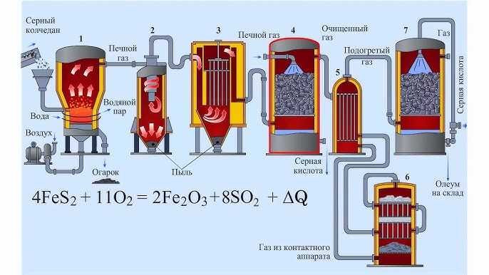

Общее описание процесса производства
Производство серной кислоты основано на контактном методе, который является промышленным стандартом. Основные этапы включают:
- Сжигание серы или серного колчедана для получения диоксида серы (SO₂).
- Очистку и осушку газов перед каталитической стадией.
- Каталитическое окисление диоксида серы до триоксида серы на ванадиевом катализаторе.
- Поглощение триоксида серы концентрированной серной кислотой для получения олеума.
- Разбавление олеума водой до нужной концентрации товарной серной кислоты.
Основные принципы производства
- Катализ: ускорение окисления SO₂ до SO₃ с помощью катализатора V₂O₅.
- Непрерывность процесса: постоянный поток сырья и газов.
- Противоток и максимальная площадь контакта: повышает эффективность взаимодействия газов и жидкостей.
- Теплообмен: использование экзотермического тепла для подогрева сырья и производства пара.
- Рациональное использование сырья: переработка побочных продуктов металлургии и нефтегазовой промышленности.
Схема процесса

Аппаратура производства серной кислоты
1. Печь обжига / кипящий слой
Задача: получение газа с SO₂ из серосодержащего сырья.
Процесс: порошкообразный колчедан или сера находятся в состоянии «кипящего слоя» потоком горячего воздуха:
S + O₂ → SO₂ + тепло
4 FeS₂ + 11 O₂ → 2 Fe₂O₃ + 8 SO₂ + тепло
2. Циклон / грубая очистка газов
Удаляет крупные частицы (золу, шлак) для защиты оборудования и катализатора.
3. Электрофильтр / тонкая очистка газов
Удаляет микропыль (1–10 мкм), поддерживает активность катализатора.
4. Сушильная башня / осушка газа
Удаляет влагу перед каталитическим окислением SO₂.
H₂O(газ) + H₂SO₄ → H₂SO₄·H₂O
5. Теплообменники / рекуперация тепла
Подготовка газа к каталитическому окислению и использование тепла для подогрева сырья и производства пара.
6. Контактный аппарат / каталитический конвертер
Окисление SO₂ до SO₃ на катализаторе V₂O₅:
2 SO₂ + O₂ ⇌ 2 SO₃ + тепло
7. Абсорбционная башня / получение олеума и серной кислоты
Поглощение SO₃ концентрированной H₂SO₄ и получение товарного продукта:
SO₃ + H₂SO₄ → H₂S₂O₇
H₂S₂O₇ + H₂O → 2 H₂SO₄
Видео о процессе производства серной кислоты